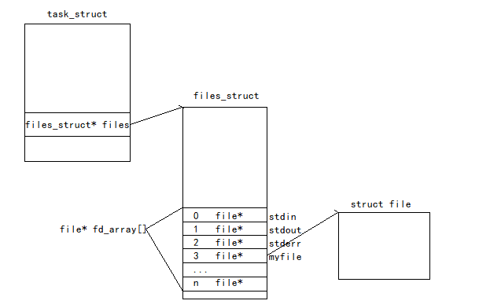

文件描述符
文件描述符就是从0开始的整数，打开文件时，操作系统在内存中要创建相应的数据结构file来描述目标文件，而进程执行系统文件IO，必须让进程和文件关联起来。所以每个进程都有一个指针files, 指向一张表files_struct，表中包涵一个指针数组，每个元素都是一个指向打开文件的指针，本质上，文件描述符就是数组的下标

open/close
#include <sys/types.h>
#include <sys/stat.h>
#include <fcntl.h>
int open(const char *pathname, int flags);
int open(const char *pathname, int flags, mode_t mode);
pathname: 要打开或创建的目标文件
flags: 一个或者多个常量进行或运算，构成flags
O_RDONLY: 只读打开，O_WRONLY: 只写打开，O_RDWR: 读，写打开。这三个常量，必须指定一个且只能指定一个
O_CREAT: 若文件不存在，则创建。需要使用mode选项，来指明新文件的访问权限
O_APPEND: 追加写打开
O_TRUNC: 打开文件截断为0
mode: 文件访问权限，如，0664，这里真实权限为mode & ~umask，umask(0)设置权限掩码
返回值: 成功返回文件描述符，失败返回-1并设置errno
close
#include <unistd.h>
int close(int fd);
fd: 文件描述符
返回值: 成功返回0，失败返回-1并设置errno
write/read
#include <unistd.h>
ssize_t write(int fd, const void *buf, size_t count);
ssize_t read(int fd, void *buf, size_t count);
fd: 文件描述符
buf: 写入到文件描述符的指定的缓冲区/从文件描述符fd将字节数读入的缓冲区
count: 写入到文件描述符的字节数/从文件描述符读入的字节数
返回值: 成功返回写入/读入字节数，失败返回-1并设置errno
lseek
#include <sys/types.h>
#include <unistd.h>
off_t lseek(int fd, off_t offset, int whence);
fd: 文件描述符
offset: 偏移量
whence:
SEEK_SET: 文件偏移量将被设置为offset
SEEK_CUR: 文件偏移量将被设置为当前文件偏移量加上offset，offset可正可负
SEEK_END: 文件偏移量将被设置为文件长度加上offset，offset可正可负
返回值: 成功返回新的偏移量，失败返回-1并设置errno
重定向
文件描述符分配原则
1 |
|
运行后我们发现本来应该输出到显示器上的内容却输出到了myfile当中，其中fd=1，所以文件描述符的分配原则为最小未使用原则
dup2系统调用
#include <unistd.h>
int dup2(int oldfd, int newfd);
让newfd下标对应的指针也指向oldfd下标对应的指针所指向的文件
1 | int main() { |
运行结束后文件myfile中
hehe
fd: 3
缓冲区
一般C库函数写入文件时是全缓冲的，而写入显示器是行缓冲
1 |
|
所以运行./a.out发现输出
printf
fwrite
write
但是运行./a.out > file，则file文件中printf和fwrite被打印了两次，write还是一次
这是因为’\n’刷新缓冲区的作用只对标准输出有用，而对于普通文件来说数据的缓冲方式由行缓冲变成了全缓冲，而我们放在缓冲区中的数据，就不会被立即刷新，fork的时候，子进程会连缓冲区中数据一起拷贝，write没有变化，说明它没有用户级缓冲
C库当中的FILE结构体内(/usr/include/libio.h)包含了用户态的缓冲区定义，以及文件描述符，本质上都是通过文件描述符来访问的